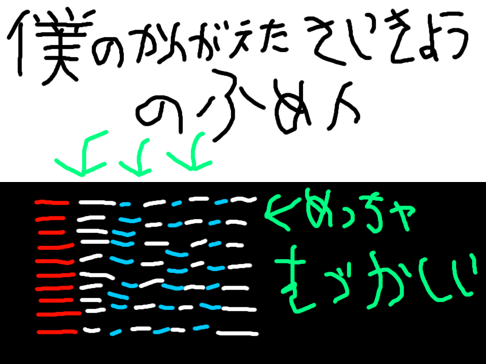
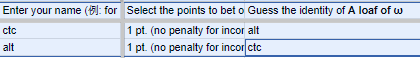
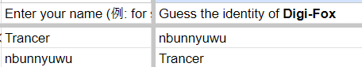
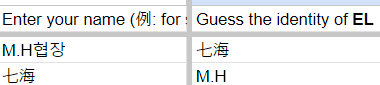

SABUN in the DARK
Result
| Rank | Participant | Black | Gray | Sand | Sum |
|---|---|---|---|---|---|
| 1 | qtp13 | 11 | 19 | 7 | 37 |
| 2 | 七海 | 8 | 12 | 6 | 26 |
| 3 | nbunnyuwu | 7 | 6 | 9 | 22 |
| 4 | hex | 6 | 6 | 6 | 18 |
| 4 | Mary_sue | 4 | 7 | 7 | 18 |
| 6 | AYhaz | 3 | 2 | 9 | 14 |
| 6 | extra | 4 | 4 | 6 | 14 |
| 8 | tyrcs | 5 | -2 | 10 | 13 |
| 9 | Decimal | 4 | 4 | 3 | 11 |
| 9 | Tristan97 | 4 | 5 | 2 | 11 |
| 11 | 0samil0 | 4 | 5 | 1 | 10 |
| 12 | Lapis | 4 | 4 | 1 | 9 |
| 12 | ctc | 5 | 4 | 0 | 9 |
| 14 | alt | 3 | 3 | 1 | 7 |
| 15 | Trancer | -1 | 2 | 5 | 6 |
| 16 | ClassicNoob | 4 | 4 | -3 | 5 |
| 17 | for some reason | 3 | 2 | 8 | 0 |
| 17 | AMATEUR sexyBMS GUY | 2 | 3 | 15 | 0 |
| 19 | M.H | -4 | 3 | 0 | -1 |
| 20 | hyso | -14 | -49 | -21 | -84 |
Detailed Score
자세한 결과는 이쪽에서 볼 수 있습니다.
詳しい結果はこちらからご覧いただけます。
You can see the detailed results here.
ViewBest Impressioner
| Rank | Writer | Impressions |
|---|---|---|
| 1 | LT (for some reason) | 61 |
| 1 | qtp13 | 61 |
| 3 | LUXURY♪ | 40 |
| 4 | 七海 | 27 |
| 5 | Lapis | 20 |
| 6 | ClassICNooB | 15 |
| 7 | hex | 10 |
| 7 | nbunnyuwu | 10 |
| 9 | Trancer | 4 |
| 10 | tyrcs | 1 |
Participant Review
AYhaz

ClassICNooB
안녕하세요. SABUN in the DARK에 참여한 Dignitas a.k.a
ClassICNooB 입니다.
우선 저는 이 대회에 참가하지 않으려 했습니다. 차분 4개밖에 안 만든 사람이 뭔 차분 대회냐면서요.
하지만 이런 기회를 놓치고 싶진 않았습니다. 차분 제작하면서 실력도 늘리고, 가명 추리하는 것이 재미있을 거 같았기 때문입니다.
그래서 신청하게 되었습니다! :>
1. Black Box
Black Box에 출품했던 Oekaki는 평소에 제가 좋아하던 작곡가 chilldive 님의 곡으로 선정하게 되었습니다.
Get over it! 이나 Stank Facer도 괜찮을거 같지만, Get over it! 은 이미 제작했었고 Stank Facer은 어떻게 키음을 배치해야 할지 감이 안 잡혀서 결국 Oekaki로 하게 되었습니다.
차분은 기본적으로 SPA 차분에 무키음 제거 & 패턴 일부 강화를 생각하고 짰습니다. 솔직히 저렙으로 만든 거 치고 잘 짰다고 생각합니다.
Measure 39에 있는 이상한 배치 빼고요. 저건 다시 짜게 된다면 배치를 바꿔서 내고 싶네요.
그리고 난이도 명은 BGA에 있는 한 어린아이가 로켓을 그려서 우주 탐험을 나가는 내용이기에 [SP Drawing]으로 하게 되었습니다.
2. Gray Box
Gray Box에 출품했던 Sesame Kingdom 도 VeetaCrush 님의 명곡 중 하나라 생각하여 선정하게 되었습니다.
Glacier's Poetry 가 진짜 엄청납니다.
차분은 st3에 있는 Heartful 패턴을 조금 참고하였습니다. Heartful 패턴을 보면 하이라이트 부분에 동치 + 데님 같은 느낌으로 되어있는데 저는 데님으로만 하려다가 결국 다중 계단 + 폴리리듬이 되었네요.
이 차분을 만들 때 좀 이상한 이야기가 하나 있는데 초반 패턴을 제작할 때 uBMSC 의 폭을 1.00으로 쓰는 바람에 리드를 발견하지 못하여 초반에 B15하고 오른쪽 14칸 뒤에 있는 걸 아예 사용하지 못했습니다.
추후엔 발견하여 극초반만 약간 추가해 주긴 했는데, 이걸 진작에 발견했다면 난이도 면으로나 패턴 면으로나 더 좋아졌을 거 같은데 매우 아쉬운 차분 중 하나입니다.
그리고 난이도 명은 Sesame라고 하니 우리가 옛날에 보던 Sesame Street이 생각나서 이 난이도명으로 지었습니다.
3. Sand Box
Sand Box에 출품했던 WHIRLWIND 는 저의 아이디어로부터 시작하게 되었습니다. 과거에 만들다 말은 차분을 지금에 와서 이어 만들면 어떨까 하는 마음으로 말이죠.
그래서 만들고 말았던 차분이 Outernoid, 無機質世界に彩を, WHIRLWIND, Ginnungagap이었습니다. 근데 Past vs Present라는 명의를 사용하기 위해선 절반이나 그 이상 만든 차분이 필요하다고 생각했습니다.
그래서 절반 정도 만든 것인 Outernoid와 WHIRLWIND 중 뭘 만들까 고민하다가 안 되겠다 싶어서 룰렛을 돌려서 나온 게 WHIRLWIND이었습니다.
컨셉은 qtp13님이 말씀하신 거와 거의 동일합니다. Past 는 따닥이 + 지력, Present 는 이중계단 이였습니다. Past 가 measure 1-46, Present 가 measure 47-70입니다.
솔직히 설명이 좀 필요했을 거 같다는 생각도 하고 컨셉 아이디어 자체는 흥미로운데 컨셉 나누기를 실패한 게 아닌지 좀 고민이 되었던 차분입니다.
4. 마무리
SABUN in the Dark를 신청하였을 땐 약간 떨리는 마음으로 시작하였지만, 나중에는 다른 분들의 차분을 플레이하고, 또한 누구인지 추리해 나가는 것이 저에겐 아주 좋은 기회가 되었던 거 같습니다.
이 이벤트를 주최하시고 또한 성공적으로 마무리 할 수 있게 만드신 LuvTek님, PARKSU님에게 감사드리고 참가 후기를 마칩니다. 여러분들 모두 수고하셨고 나중에 기회가 된다면 합작도 부탁드리겠습니다.
우선 저는 이 대회에 참가하지 않으려 했습니다. 차분 4개밖에 안 만든 사람이 뭔 차분 대회냐면서요.
하지만 이런 기회를 놓치고 싶진 않았습니다. 차분 제작하면서 실력도 늘리고, 가명 추리하는 것이 재미있을 거 같았기 때문입니다.
그래서 신청하게 되었습니다! :>
1. Black Box
Black Box에 출품했던 Oekaki는 평소에 제가 좋아하던 작곡가 chilldive 님의 곡으로 선정하게 되었습니다.
Get over it! 이나 Stank Facer도 괜찮을거 같지만, Get over it! 은 이미 제작했었고 Stank Facer은 어떻게 키음을 배치해야 할지 감이 안 잡혀서 결국 Oekaki로 하게 되었습니다.
차분은 기본적으로 SPA 차분에 무키음 제거 & 패턴 일부 강화를 생각하고 짰습니다. 솔직히 저렙으로 만든 거 치고 잘 짰다고 생각합니다.
Measure 39에 있는 이상한 배치 빼고요. 저건 다시 짜게 된다면 배치를 바꿔서 내고 싶네요.
그리고 난이도 명은 BGA에 있는 한 어린아이가 로켓을 그려서 우주 탐험을 나가는 내용이기에 [SP Drawing]으로 하게 되었습니다.
2. Gray Box
Gray Box에 출품했던 Sesame Kingdom 도 VeetaCrush 님의 명곡 중 하나라 생각하여 선정하게 되었습니다.
차분은 st3에 있는 Heartful 패턴을 조금 참고하였습니다. Heartful 패턴을 보면 하이라이트 부분에 동치 + 데님 같은 느낌으로 되어있는데 저는 데님으로만 하려다가 결국 다중 계단 + 폴리리듬이 되었네요.
이 차분을 만들 때 좀 이상한 이야기가 하나 있는데 초반 패턴을 제작할 때 uBMSC 의 폭을 1.00으로 쓰는 바람에 리드를 발견하지 못하여 초반에 B15하고 오른쪽 14칸 뒤에 있는 걸 아예 사용하지 못했습니다.
추후엔 발견하여 극초반만 약간 추가해 주긴 했는데, 이걸 진작에 발견했다면 난이도 면으로나 패턴 면으로나 더 좋아졌을 거 같은데 매우 아쉬운 차분 중 하나입니다.
그리고 난이도 명은 Sesame라고 하니 우리가 옛날에 보던 Sesame Street이 생각나서 이 난이도명으로 지었습니다.
3. Sand Box
Sand Box에 출품했던 WHIRLWIND 는 저의 아이디어로부터 시작하게 되었습니다. 과거에 만들다 말은 차분을 지금에 와서 이어 만들면 어떨까 하는 마음으로 말이죠.
그래서 만들고 말았던 차분이 Outernoid, 無機質世界に彩を, WHIRLWIND, Ginnungagap이었습니다. 근데 Past vs Present라는 명의를 사용하기 위해선 절반이나 그 이상 만든 차분이 필요하다고 생각했습니다.
그래서 절반 정도 만든 것인 Outernoid와 WHIRLWIND 중 뭘 만들까 고민하다가 안 되겠다 싶어서 룰렛을 돌려서 나온 게 WHIRLWIND이었습니다.
컨셉은 qtp13님이 말씀하신 거와 거의 동일합니다. Past 는 따닥이 + 지력, Present 는 이중계단 이였습니다. Past 가 measure 1-46, Present 가 measure 47-70입니다.
솔직히 설명이 좀 필요했을 거 같다는 생각도 하고 컨셉 아이디어 자체는 흥미로운데 컨셉 나누기를 실패한 게 아닌지 좀 고민이 되었던 차분입니다.
4. 마무리
SABUN in the Dark를 신청하였을 땐 약간 떨리는 마음으로 시작하였지만, 나중에는 다른 분들의 차분을 플레이하고, 또한 누구인지 추리해 나가는 것이 저에겐 아주 좋은 기회가 되었던 거 같습니다.
이 이벤트를 주최하시고 또한 성공적으로 마무리 할 수 있게 만드신 LuvTek님, PARKSU님에게 감사드리고 참가 후기를 마칩니다. 여러분들 모두 수고하셨고 나중에 기회가 된다면 합작도 부탁드리겠습니다.
ctc
Decimal
こんにちは。腹痛(ぽんぽんぺいん)に悩まされる男、Decimalです。
自分は差分作者として名前を知られてないほうだろうなあ、と思いながらも 思い切って参加させていただきました。
SABUN in the DARKに関わった皆様方へ、お礼を申し上げます。
せっかくなので差分作ってる時に考えてたことなどを書きます。
・hinadelic -さでぃすむ-
本当はBlackBox部門にCG [↑Cut,Gravity↓] を提出する予定でした。
作ってる途中、譜面配置に悩みまして...
youtubeなどを眺めてたらたまたまhinadelicの動画を見かけたんです。
聞いてたら、ガバキックを全押しにしたい衝動に駆られまして。
気づいたら深夜テンションの勢いで4時間程度で完成させてました。
ちなみに全押し多めの連打譜面は過去に作成経験がありまして。
異常譜面遊戯という差分企画に参加させていただいたときに提出した譜面である、 Let's get wild -=≡ B a N a N a ≡=- がソレです。
なので結構正体を隠すつもりはなかったです。
ちなみに、縦連打コレクション様に隔離枠で収録して頂いております。
いろんな方の楽しい縦連打譜面が収録されてありますので、そちらも是非どうぞ。
・CG [↑Cut,Gravity↓] -かおしずむ-
さて、GrayBox部門は作りかけの譜面を作ろう...と思って続きを作りました。
ちなみに、自分ではsl9 宇宙テレビ #Decimalize と似た譜面を作ろうと意識しました。
あの譜面は自分が初めて作った発狂差分で、結構拙い譜面だったなあ...ということを
思い出しながら、ある程度汚く、ある程度無理のない配置にしました。
全体的に自己紹介になるような譜面制作を意識していたと思います。
...嘘です、あまりなんも考えてません。
・Highleg Mermaid [B92]
突然話は変わりますが、私は棟方愛海が好きです。
棟方愛海は、アイドルマスターシンデレラガールズのアイドルの一人です。
棟方愛海という名義は、実はsl6 ベストフレンド [B80] で過去に使用したことがあります。
Decimalという人はSABUN in the DARKの趣旨を全力で間違えています。
彼女の誕生日は8/1なのですが、GrayBox部門の差分を出し終えた後に、 ふと彼女の誕生日が近いな～...って思いまして。
既存の偽名で差分提出を行っても大丈夫との許可を得られたので、誕生日前日の夜に ４時間くらいで差分を作りました。ノリノリで作りました。
結構自分でも納得の出来になったと思ってます。
企画の趣旨に反する様な要望でしたが、快諾していただき誠にありがとうございました。
ちなみに意外と正体がバレなかったのも面白かったです。
無名作者なので正体隠そうとしなくても問題ないという好例でした。
ちなみにB80、B92はデカさの数字です。
大きさが全てではない。彼女もそう言っています。
・最後に
参加することに色々と不安もありましたが、すっごい楽しかったです。
多分今後も差分作ると思うので、名前見かけたらよろしくおねがいします。
自分は差分作者として名前を知られてないほうだろうなあ、と思いながらも 思い切って参加させていただきました。
SABUN in the DARKに関わった皆様方へ、お礼を申し上げます。
せっかくなので差分作ってる時に考えてたことなどを書きます。
・hinadelic -さでぃすむ-
本当はBlackBox部門にCG [↑Cut,Gravity↓] を提出する予定でした。
作ってる途中、譜面配置に悩みまして...
youtubeなどを眺めてたらたまたまhinadelicの動画を見かけたんです。
聞いてたら、ガバキックを全押しにしたい衝動に駆られまして。
気づいたら深夜テンションの勢いで4時間程度で完成させてました。
ちなみに全押し多めの連打譜面は過去に作成経験がありまして。
異常譜面遊戯という差分企画に参加させていただいたときに提出した譜面である、 Let's get wild -=≡ B a N a N a ≡=- がソレです。
なので結構正体を隠すつもりはなかったです。
ちなみに、縦連打コレクション様に隔離枠で収録して頂いております。
いろんな方の楽しい縦連打譜面が収録されてありますので、そちらも是非どうぞ。
・CG [↑Cut,Gravity↓] -かおしずむ-
さて、GrayBox部門は作りかけの譜面を作ろう...と思って続きを作りました。
ちなみに、自分ではsl9 宇宙テレビ #Decimalize と似た譜面を作ろうと意識しました。
あの譜面は自分が初めて作った発狂差分で、結構拙い譜面だったなあ...ということを
思い出しながら、ある程度汚く、ある程度無理のない配置にしました。
全体的に自己紹介になるような譜面制作を意識していたと思います。
...嘘です、あまりなんも考えてません。
・Highleg Mermaid [B92]
突然話は変わりますが、私は棟方愛海が好きです。
棟方愛海は、アイドルマスターシンデレラガールズのアイドルの一人です。
棟方愛海という名義は、実はsl6 ベストフレンド [B80] で過去に使用したことがあります。
Decimalという人はSABUN in the DARKの趣旨を全力で間違えています。
彼女の誕生日は8/1なのですが、GrayBox部門の差分を出し終えた後に、 ふと彼女の誕生日が近いな～...って思いまして。
既存の偽名で差分提出を行っても大丈夫との許可を得られたので、誕生日前日の夜に ４時間くらいで差分を作りました。ノリノリで作りました。
結構自分でも納得の出来になったと思ってます。
企画の趣旨に反する様な要望でしたが、快諾していただき誠にありがとうございました。
ちなみに意外と正体がバレなかったのも面白かったです。
無名作者なので正体隠そうとしなくても問題ないという好例でした。
ちなみにB80、B92はデカさの数字です。
大きさが全てではない。彼女もそう言っています。
・最後に
参加することに色々と不安もありましたが、すっごい楽しかったです。
多分今後も差分作ると思うので、名前見かけたらよろしくおねがいします。
Mary_Sue
신변에 어떤 일이 생겨 황급하게 후기를 쓰게 되었습니다. 이렇게
후기를 적은 것도 Mutual Fumen 이후 약 3년 만인 것 같은데, 감회가
새롭습니다.
워낙 어메이징한 패턴이 많이 나온 대회였기에 정말 유익했다, 많이 배우는 계기가 되었다 등등 어메이징하지 못한 이야기는 되도록 안 하려고 합니다.
그런데 그러면 쓸 거리가 별로 없으니, 이번 대회에 어떤 곡으로 패턴을 만들까 고민했던 과정을 이야기로 풀어보겠습니다.
旧スク万能論 ( by 髭姫 )
가장 먼저 생각났던 곡입니다. 노래 자체도 불세출의 명곡이지만, BGA도 완벽에 가깝고 동봉보면도 나름대로 퀄리티를 갖춘 물건이라 언젠가 저도 꼭 패턴을 만들어 보고 싶은 녀석입니다.
그러나 누구 말마따나 '메리수 감성'이 그득한 작품이라 익명 차분 대회에 들고나오기에는 위험부담이 좀 있었습니다. 언젠가는 패턴을 만들긴 할 건데, 그게 이번 대회는 아닌 것으로 하겠습니다.
더구나 M-SPIN님이나 에고사님 등 이번 대회에 참가한 분들이 보는 앞에서 이 노래의 동봉보면을 플레이한 전적도 있어서 익명 대회에 참가하는 와중에는 그냥 안 건드리는 게 맞았던 것 같습니다.
그것과는 별개로 髭姫 씨의 노래는 전부 명곡이고 BGA와의 조화도 훌륭한 편이니 꼭 감상을 해보세요. 인생이 달라지고 하루하루가 윤택해집니다.
Meary ( by しらいし )
영문 표기만 보면 쉬이 짐작이 안 가지만 일본어식으로 발음하면 'メアリ(메아리)'가 되는데, 제 명의 일부와 표기는 다르지만, 발음은 같습니다.
너무 대놓고 정체를 드러내는 것 같지만, 그게 또 매력이니까요. 위에서 Mutual Fumen 이야기했는데, Mutual Fumen 당시에도 저희 팀 명의를 '주최팀'으로 해서 여러 사람을 낚은 전적이 있습니다.
뻔뻔함이 극에 달하면 오히려 속아 넘어가는 사람이 많더라고요. 그래서 실제로 패턴을 꽤 만들어 놓기도 했습니다. 원래 예정대로라면 Black Box 때 이 노래의 패턴을 제출하려고 했는데...
mbmplay로 오토 플레이를 돌려보니, 예전에 제가 YUKINA와 Volt라는 노래로 패턴을 만들었는데 그거랑 모양이 굉장히 유사하더군요.
그래서 익명 차분 대회에 제출하기에는 부적절하다는 판단하에 눈물을 머금고 제출하는 걸 포기했습니다. 그래도 상당 부분 완성이 돼서 조금만 더 다듬으면 스텔라 업로더에는 공개가 가능할 것 같네요.
노래 자체는 대회 준비 기간에 뜬금없이 youtube 추천 영상 목록에 떠서 접하게 됐는데, (왠지는 모르겠습니다만) 과거에 그 영상에 '싫어요'를 박아놨더라고요.
BGI의 여자아이가 한 대 때리고 싶게 만드는 표정을 짓고 있긴 한데 고작 그런 하찮은 이유로 싫어요를 박았나 싶기도 하고...
ABC ( by scamp )
ABC를 비롯해 MEDUSA, 北極点で地球六周 등 scamp 씨의 주옥같은 노래들이 참 많지만, 익명 차분 대회라면 그래도 익명성이 어느 정도는 있어야 하잖아요.
BCeL (BMS Chart editors' League) 이라는 대회에서도 scamp 씨의 노래를 추천곡으로 선택한 전적이 있고, scamp 씨의 노래로 패턴을 만든 적도 있어서 들키기 매우 쉽겠다는 생각이 들었습니다.
가뜩이나 노래들도 난해해서 만드는 데에 노력이 많이 들 텐데 쉽게 정체를 들켜버리면 굉장히 허망할 것 같더라고요. 그래서 그냥 포기했습니다. 언젠가는 패턴을 만들어 보겠습니다.
DELIGHTFUL☆DREAM ( by 凸レーション )
아이돌 마스터인지 러브 라이브인지 어떤 작품에서 나온 노래를 어레인지한 BMS인데, Meary처럼 youtube 추천 영상 목록에 떠서 알게 됐습니다.
농담하거나 모르는 척 하는 게 아니라 진짜로 러브 라이브든 아이돌 마스터든 이름만 들어봤지, 뭐가 뭔지 잘 모르겠는데요, 여하튼 아예 이런 십덕 쪽으로 밀어붙이는 건 어떨까 했습니다.
에고사님이나 PARKSU님이 그런 쪽(?)을 조금 아시는 것 같고 실제로 그런 쪽 감성이 나는 BMS로 패턴을 만든 전적도 있어서, 제가 아닌 척 위장하기에는 나쁘지 않은 선택지였습니다.
그런데 문제가 하나 있었는데, 작곡가가 가명을 쓰고 있어서 처음에는 누군지 몰랐습니다만, 알고 보니까 P4로 시작해서 koo로 끝나는, 최근 들어 굉장히 논란을 많이 불러일으키고 있는 어떤 분이더라고요.
괜히 대회에 풍평피해를 유발할 것 같아서 자제했습니다. 아, 그런데 이런 후기도 좀 문제가 되려나? 뭐 일단 참가자들의 후기도 주최 측의 검열을 거치는 것 같으니, 전적으로 주최측의 판단에 맡기겠습니다.
SAKURA ( by ANKAKE )
원래 처음에는 Gray Box에 제출할 예정이었던 패턴입니다만 만들어 놓고 보니 너무나도 전형적인 메리수 식 짤연타 패턴이라서 그냥 따로 공개했습니다.
다 만들어 놓고 나서 문득 든 생각인데, 노래 자체도 굉장히 메리수 감성이 묻어나오는 물건이라 익명 차분 대회에 내기에는 여러모로 부적절했던 것 같습니다.
메리수 감성이 뭐냐고요? 저도 잘 모르겠습니다만, 그냥 좀 마이너한 감성을 뜻하는 것 같기도 하네요.
사실 이 부분까지만 쓰고 글을 끝내려고 했는데, 생각해 보니까 정식으로 제출한 패턴에 대해선 일언반구도 없는데 패턴을 만들지도 않은 노래에 대해서 길게 이야기하는 것 같아서 내용을 더 추가해 보려고요.
이런 과정을 통해 선별된 2개의 노래가 바로 제가 Black Box와 Gray Box에 제출한 THE SEVEN과 Quadrupolar였습니다.
THE SEVEN ( by 軍人与作しきみ )
노래 자체는 아주 예전부터 알고 있었습니다만 패턴을 만들기에는 상당히 난해한 작품이라 손을 댈 생각은 없었습니다.
그런데 최근에 Pump It Up이라는 게임에 대해 이야기하던 중에 해당 게임에 'Mission Possible'이라는 노래가 있는데, 분명 발로 밟는 게임인데 BPM 124에 32비트 난타가 나온다는 이야기를 듣게 됐습니다.
그 이야기에 영감을 얻어 BPM 144에 32비트 (딜레이에 가까운) 난타 패턴을 만들면 잘 어울리겠다고 생각하게 됐습니다. 그 결과가 바로 Black Box에 제출된 THE SEVEN ・・・・・・・ 패턴입니다.
사실 이 패턴 하나만으로도 후기 전체에 맞먹는 길이의 글을 쓸 수 있을 것 같습니다만, 가뜩이나 재미없는 글에 더 재미없는 내용을 보태면 쓰는 저도 괴롭기 때문에 길게 이야기하지는 않겠습니다.
단지 하나 말씀드리고 싶은 점은, 이 패턴에 들어간 32비트 딜레이 노트의 상당수가 무음 노트라는 점입니다. 이 패턴을 통해 일종의 실험을 하고 싶었어요.
st4에 있는 花たちに希望を [akather]에서 시도되었던 것처럼, 무음 노트로 이루어진 패턴도 자연스러울 수 있는가? 사람의 귀를 어디까지 속일 수 있을까? 하는 의구심이 들었습니다.
다만 처음부터 끝까지 쭉 무음 노트투성이라면 아무리 둔감한 사람이라도 이상하다고 생각할 염려가 있기에 중간중간에 하이햇 키음을 딜레이해서 넣어놨습니다.
그 덕에 부자연스러움이 좀 완화됐을까요? 아니면 미세하게나마 들리는 하이햇 키음이 사라졌다가 들렸다가 해서 더 부자연스러울까요?
개인적으로는 만족스러운 수준으로 패턴이 자연스러워 보입니다만, 판단은 각자의 몫인 것 같습니다.
Quadrupolar ( by 暮狛 )
THE SEVEN 쪽은 패턴을 만들기에 난해할 뿐이지 노래 자체는 직관적인 힙합이었는데, 이 노래는 노래 자체부터가 난해했습니다.
그래서 어느 정도 통제가 가능했던 THE SEVEN 쪽과는 달리 노래에 좀 끌려다녔다는 느낌도 받았는데요, 그래서 제 정체를 잘 숨기지 못하고 어느 정도 제 본래 스타일을 노출한 탓에 정답률이 조금은 높아진 것 같습니다.
이 노래를 어디서 접했느냐 하면 bms search라는 사이트가 있는데, 그 사이트에 개인 플레이리스트를 만들 수 있는 기능이 있습니다. 어떤 분이 만든 플레이리스트인지 정확히 기억은 안 나는데,
2010년대~2020년대 BMS 중 100점 만점짜리 BMS를 모아놓은 플레이리스트였다는 사실은 명확히 기억납니다. 그 플레이리스트 중에 이 노래가 있었고, 마침 제 마음에도 쏙 들었습니다.
위에서도 이야기했듯 SAKURA 라는 노래로 패턴을 하나 만들어 놔서 굉장히 마음에 여유가 넘쳤는데, 만들어 놓은 패턴을 곱씹어 본 끝에 정체를 숨기려면 SAKURA 가지곤 안되겠다는 판단을 내리고,
번갯불에 콩 볶아 먹듯 엄청나게 빠른 속도로 이 노래의 패턴을 만들게 되었습니다. 왜 하필 이 노래를 골랐는지는 저도 모르겠습니다. 그냥 뇌리를 가장 먼저 스치고 지나간 노래가 이거였어요.
THE SEVEN과는 다르게 키음이 무지막지하게 많아서 인위적으로 어렵게 만들 필요가 없었습니다. 그냥 노래에 맞춰서 패턴을 만들고 키음을 넣다 보면 저절로 어려워진 상태가 됐습니다.
제 처음 계획보다 훨씬 어려워지긴 했습니다만 후회는 없습니다. 그래도! 노래가 난해한 것 치고는 그래도! 합리적인 면이 상당 부분 존재하는 패턴이 된 것 같아서요...
이번 대회에 쓴 'Tiwa Pudpichya' 라는 명의에 대해...
별거 없습니다. 그냥 사촌 여동생이 예전에 즐겨 보던 학습만화 중에 '라 플로라 아카데미'라는 물건이 있었는데요, 그 만화 주인공 이름입니다.
저도 하도 옛날에 잠깐 스쳐 가듯 본 책이라 주인공 이름의 한글 표기가 정확히는 기억이 안 나네요. 나무위키에 따르면 '티와 풋피처냐'라고 하는데 뭐 나무위키 말이 맞겠죠.
이름에는 n이 없는데 왠지 모르게 n 발음이 추가된 것 같긴 한데 동남아시아 언어가 알파벳으로 표기하면 실제 발음하고 어느 정도 차이가 있더라고요.
개인적으로 동남아시아 언어들은 다 어려운 것 같아요.. 각 나라의 고유한 문자로 제대로 접하는 게 아니라 알파벳을 통해 수박 겉핥기식으로 접해서 그런가, 직관적이지 못한 부분이 있는 것 같습니다.
원래 Sand Box 부문에 라 플로라 아카데미에 등장하는 다른 등장인물 이름들을 명의로 해서 패턴들을 더 제출할까 생각도 해 봤는데, 꼬리가 길면 결국 잡히더라고요.
익명 대회에서 괜한 컨셉 잡다가 들키느니, 그냥 망나니 같은 패턴 (bananaマン) 하나 내고 말았습니다.. 그래도 아이디어는 확실히 존재합니다.
그러니 앞으로 스텔라 업로더에 제가 만든 패턴이 올라오거든, 이게 처음에는 Sand Box에 제출될 예정이었던 패턴이구나~ 하고 생각해주시면 될 것 같습니다.
한 2~3개쯤 되는데, 아마 올해 안에 다 공개할 수 있지 않을까? 생각하고 있습니다. 올해 BOF에 나오는 노래들 갖고도 패턴을 만들어야 해서 일이 순조롭게 진행될지는 저조차도 잘 모르겠지만요.
어쨌든 쓸데없이 긴 글 읽어주셔서 감사합니다.
읽지 않으셨더라도 어쨌든 스크롤 내리시느라고 손가락을 움직이셨을 테니까 그 점에 감사드립니다.
더 좋은 패턴으로 찾아뵙겠습니다.
2023/08/27 Mary_Sue
워낙 어메이징한 패턴이 많이 나온 대회였기에 정말 유익했다, 많이 배우는 계기가 되었다 등등 어메이징하지 못한 이야기는 되도록 안 하려고 합니다.
그런데 그러면 쓸 거리가 별로 없으니, 이번 대회에 어떤 곡으로 패턴을 만들까 고민했던 과정을 이야기로 풀어보겠습니다.
旧スク万能論 ( by 髭姫 )
가장 먼저 생각났던 곡입니다. 노래 자체도 불세출의 명곡이지만, BGA도 완벽에 가깝고 동봉보면도 나름대로 퀄리티를 갖춘 물건이라 언젠가 저도 꼭 패턴을 만들어 보고 싶은 녀석입니다.
그러나 누구 말마따나 '메리수 감성'이 그득한 작품이라 익명 차분 대회에 들고나오기에는 위험부담이 좀 있었습니다. 언젠가는 패턴을 만들긴 할 건데, 그게 이번 대회는 아닌 것으로 하겠습니다.
더구나 M-SPIN님이나 에고사님 등 이번 대회에 참가한 분들이 보는 앞에서 이 노래의 동봉보면을 플레이한 전적도 있어서 익명 대회에 참가하는 와중에는 그냥 안 건드리는 게 맞았던 것 같습니다.
그것과는 별개로 髭姫 씨의 노래는 전부 명곡이고 BGA와의 조화도 훌륭한 편이니 꼭 감상을 해보세요. 인생이 달라지고 하루하루가 윤택해집니다.
Meary ( by しらいし )
영문 표기만 보면 쉬이 짐작이 안 가지만 일본어식으로 발음하면 'メアリ(메아리)'가 되는데, 제 명의 일부와 표기는 다르지만, 발음은 같습니다.
너무 대놓고 정체를 드러내는 것 같지만, 그게 또 매력이니까요. 위에서 Mutual Fumen 이야기했는데, Mutual Fumen 당시에도 저희 팀 명의를 '주최팀'으로 해서 여러 사람을 낚은 전적이 있습니다.
뻔뻔함이 극에 달하면 오히려 속아 넘어가는 사람이 많더라고요. 그래서 실제로 패턴을 꽤 만들어 놓기도 했습니다. 원래 예정대로라면 Black Box 때 이 노래의 패턴을 제출하려고 했는데...
mbmplay로 오토 플레이를 돌려보니, 예전에 제가 YUKINA와 Volt라는 노래로 패턴을 만들었는데 그거랑 모양이 굉장히 유사하더군요.
그래서 익명 차분 대회에 제출하기에는 부적절하다는 판단하에 눈물을 머금고 제출하는 걸 포기했습니다. 그래도 상당 부분 완성이 돼서 조금만 더 다듬으면 스텔라 업로더에는 공개가 가능할 것 같네요.
노래 자체는 대회 준비 기간에 뜬금없이 youtube 추천 영상 목록에 떠서 접하게 됐는데, (왠지는 모르겠습니다만) 과거에 그 영상에 '싫어요'를 박아놨더라고요.
BGI의 여자아이가 한 대 때리고 싶게 만드는 표정을 짓고 있긴 한데 고작 그런 하찮은 이유로 싫어요를 박았나 싶기도 하고...
ABC ( by scamp )
ABC를 비롯해 MEDUSA, 北極点で地球六周 등 scamp 씨의 주옥같은 노래들이 참 많지만, 익명 차분 대회라면 그래도 익명성이 어느 정도는 있어야 하잖아요.
BCeL (BMS Chart editors' League) 이라는 대회에서도 scamp 씨의 노래를 추천곡으로 선택한 전적이 있고, scamp 씨의 노래로 패턴을 만든 적도 있어서 들키기 매우 쉽겠다는 생각이 들었습니다.
가뜩이나 노래들도 난해해서 만드는 데에 노력이 많이 들 텐데 쉽게 정체를 들켜버리면 굉장히 허망할 것 같더라고요. 그래서 그냥 포기했습니다. 언젠가는 패턴을 만들어 보겠습니다.
DELIGHTFUL☆DREAM ( by 凸レーション )
아이돌 마스터인지 러브 라이브인지 어떤 작품에서 나온 노래를 어레인지한 BMS인데, Meary처럼 youtube 추천 영상 목록에 떠서 알게 됐습니다.
농담하거나 모르는 척 하는 게 아니라 진짜로 러브 라이브든 아이돌 마스터든 이름만 들어봤지, 뭐가 뭔지 잘 모르겠는데요, 여하튼 아예 이런 십덕 쪽으로 밀어붙이는 건 어떨까 했습니다.
에고사님이나 PARKSU님이 그런 쪽(?)을 조금 아시는 것 같고 실제로 그런 쪽 감성이 나는 BMS로 패턴을 만든 전적도 있어서, 제가 아닌 척 위장하기에는 나쁘지 않은 선택지였습니다.
그런데 문제가 하나 있었는데, 작곡가가 가명을 쓰고 있어서 처음에는 누군지 몰랐습니다만, 알고 보니까 P4로 시작해서 koo로 끝나는, 최근 들어 굉장히 논란을 많이 불러일으키고 있는 어떤 분이더라고요.
괜히 대회에 풍평피해를 유발할 것 같아서 자제했습니다. 아, 그런데 이런 후기도 좀 문제가 되려나? 뭐 일단 참가자들의 후기도 주최 측의 검열을 거치는 것 같으니, 전적으로 주최측의 판단에 맡기겠습니다.
SAKURA ( by ANKAKE )
원래 처음에는 Gray Box에 제출할 예정이었던 패턴입니다만 만들어 놓고 보니 너무나도 전형적인 메리수 식 짤연타 패턴이라서 그냥 따로 공개했습니다.
다 만들어 놓고 나서 문득 든 생각인데, 노래 자체도 굉장히 메리수 감성이 묻어나오는 물건이라 익명 차분 대회에 내기에는 여러모로 부적절했던 것 같습니다.
메리수 감성이 뭐냐고요? 저도 잘 모르겠습니다만, 그냥 좀 마이너한 감성을 뜻하는 것 같기도 하네요.
사실 이 부분까지만 쓰고 글을 끝내려고 했는데, 생각해 보니까 정식으로 제출한 패턴에 대해선 일언반구도 없는데 패턴을 만들지도 않은 노래에 대해서 길게 이야기하는 것 같아서 내용을 더 추가해 보려고요.
이런 과정을 통해 선별된 2개의 노래가 바로 제가 Black Box와 Gray Box에 제출한 THE SEVEN과 Quadrupolar였습니다.
THE SEVEN ( by 軍人与作しきみ )
노래 자체는 아주 예전부터 알고 있었습니다만 패턴을 만들기에는 상당히 난해한 작품이라 손을 댈 생각은 없었습니다.
그런데 최근에 Pump It Up이라는 게임에 대해 이야기하던 중에 해당 게임에 'Mission Possible'이라는 노래가 있는데, 분명 발로 밟는 게임인데 BPM 124에 32비트 난타가 나온다는 이야기를 듣게 됐습니다.
그 이야기에 영감을 얻어 BPM 144에 32비트 (딜레이에 가까운) 난타 패턴을 만들면 잘 어울리겠다고 생각하게 됐습니다. 그 결과가 바로 Black Box에 제출된 THE SEVEN ・・・・・・・ 패턴입니다.
사실 이 패턴 하나만으로도 후기 전체에 맞먹는 길이의 글을 쓸 수 있을 것 같습니다만, 가뜩이나 재미없는 글에 더 재미없는 내용을 보태면 쓰는 저도 괴롭기 때문에 길게 이야기하지는 않겠습니다.
단지 하나 말씀드리고 싶은 점은, 이 패턴에 들어간 32비트 딜레이 노트의 상당수가 무음 노트라는 점입니다. 이 패턴을 통해 일종의 실험을 하고 싶었어요.
st4에 있는 花たちに希望を [akather]에서 시도되었던 것처럼, 무음 노트로 이루어진 패턴도 자연스러울 수 있는가? 사람의 귀를 어디까지 속일 수 있을까? 하는 의구심이 들었습니다.
다만 처음부터 끝까지 쭉 무음 노트투성이라면 아무리 둔감한 사람이라도 이상하다고 생각할 염려가 있기에 중간중간에 하이햇 키음을 딜레이해서 넣어놨습니다.
그 덕에 부자연스러움이 좀 완화됐을까요? 아니면 미세하게나마 들리는 하이햇 키음이 사라졌다가 들렸다가 해서 더 부자연스러울까요?
개인적으로는 만족스러운 수준으로 패턴이 자연스러워 보입니다만, 판단은 각자의 몫인 것 같습니다.
Quadrupolar ( by 暮狛 )
THE SEVEN 쪽은 패턴을 만들기에 난해할 뿐이지 노래 자체는 직관적인 힙합이었는데, 이 노래는 노래 자체부터가 난해했습니다.
그래서 어느 정도 통제가 가능했던 THE SEVEN 쪽과는 달리 노래에 좀 끌려다녔다는 느낌도 받았는데요, 그래서 제 정체를 잘 숨기지 못하고 어느 정도 제 본래 스타일을 노출한 탓에 정답률이 조금은 높아진 것 같습니다.
이 노래를 어디서 접했느냐 하면 bms search라는 사이트가 있는데, 그 사이트에 개인 플레이리스트를 만들 수 있는 기능이 있습니다. 어떤 분이 만든 플레이리스트인지 정확히 기억은 안 나는데,
2010년대~2020년대 BMS 중 100점 만점짜리 BMS를 모아놓은 플레이리스트였다는 사실은 명확히 기억납니다. 그 플레이리스트 중에 이 노래가 있었고, 마침 제 마음에도 쏙 들었습니다.
위에서도 이야기했듯 SAKURA 라는 노래로 패턴을 하나 만들어 놔서 굉장히 마음에 여유가 넘쳤는데, 만들어 놓은 패턴을 곱씹어 본 끝에 정체를 숨기려면 SAKURA 가지곤 안되겠다는 판단을 내리고,
번갯불에 콩 볶아 먹듯 엄청나게 빠른 속도로 이 노래의 패턴을 만들게 되었습니다. 왜 하필 이 노래를 골랐는지는 저도 모르겠습니다. 그냥 뇌리를 가장 먼저 스치고 지나간 노래가 이거였어요.
THE SEVEN과는 다르게 키음이 무지막지하게 많아서 인위적으로 어렵게 만들 필요가 없었습니다. 그냥 노래에 맞춰서 패턴을 만들고 키음을 넣다 보면 저절로 어려워진 상태가 됐습니다.
제 처음 계획보다 훨씬 어려워지긴 했습니다만 후회는 없습니다. 그래도! 노래가 난해한 것 치고는 그래도! 합리적인 면이 상당 부분 존재하는 패턴이 된 것 같아서요...
이번 대회에 쓴 'Tiwa Pudpichya' 라는 명의에 대해...
별거 없습니다. 그냥 사촌 여동생이 예전에 즐겨 보던 학습만화 중에 '라 플로라 아카데미'라는 물건이 있었는데요, 그 만화 주인공 이름입니다.
저도 하도 옛날에 잠깐 스쳐 가듯 본 책이라 주인공 이름의 한글 표기가 정확히는 기억이 안 나네요. 나무위키에 따르면 '티와 풋피처냐'라고 하는데 뭐 나무위키 말이 맞겠죠.
이름에는 n이 없는데 왠지 모르게 n 발음이 추가된 것 같긴 한데 동남아시아 언어가 알파벳으로 표기하면 실제 발음하고 어느 정도 차이가 있더라고요.
개인적으로 동남아시아 언어들은 다 어려운 것 같아요.. 각 나라의 고유한 문자로 제대로 접하는 게 아니라 알파벳을 통해 수박 겉핥기식으로 접해서 그런가, 직관적이지 못한 부분이 있는 것 같습니다.
원래 Sand Box 부문에 라 플로라 아카데미에 등장하는 다른 등장인물 이름들을 명의로 해서 패턴들을 더 제출할까 생각도 해 봤는데, 꼬리가 길면 결국 잡히더라고요.
익명 대회에서 괜한 컨셉 잡다가 들키느니, 그냥 망나니 같은 패턴 (bananaマン) 하나 내고 말았습니다.. 그래도 아이디어는 확실히 존재합니다.
그러니 앞으로 스텔라 업로더에 제가 만든 패턴이 올라오거든, 이게 처음에는 Sand Box에 제출될 예정이었던 패턴이구나~ 하고 생각해주시면 될 것 같습니다.
한 2~3개쯤 되는데, 아마 올해 안에 다 공개할 수 있지 않을까? 생각하고 있습니다. 올해 BOF에 나오는 노래들 갖고도 패턴을 만들어야 해서 일이 순조롭게 진행될지는 저조차도 잘 모르겠지만요.
어쨌든 쓸데없이 긴 글 읽어주셔서 감사합니다.
읽지 않으셨더라도 어쨌든 스크롤 내리시느라고 손가락을 움직이셨을 테니까 그 점에 감사드립니다.
더 좋은 패턴으로 찾아뵙겠습니다.
2023/08/27 Mary_Sue
七海
안녕하세요. March 7th입니다!
가명대회여서 최대한 제 차분 스타일을 숨기려고 노력했지만 만들고 보니까 Luna Express 에서는 저만의 딜레이 특징이 나오고, CO5M1C R4ILR0AD에서는 저만의 짧은 LN+난타의 특징이 나와서 많이 맞추실 줄 알았는데 의외로 맞춘 사람이 엄청 적더라구요...
조금이나마 가명대회답게 특징을 숨기려고 노력한 보람이 있어서 다행입니다!
재미있었어요. 다음번에 또 하죠?
가명대회여서 최대한 제 차분 스타일을 숨기려고 노력했지만 만들고 보니까 Luna Express 에서는 저만의 딜레이 특징이 나오고, CO5M1C R4ILR0AD에서는 저만의 짧은 LN+난타의 특징이 나와서 많이 맞추실 줄 알았는데 의외로 맞춘 사람이 엄청 적더라구요...
조금이나마 가명대회답게 특징을 숨기려고 노력한 보람이 있어서 다행입니다!
재미있었어요. 다음번에 또 하죠?
LuvTek
안녕하세요. 차분 이벤트 SABUN in the DARK를 주최한 for some
reason 또는 LuvTek입니다. 가명대회 컨셉에 맞춰 대표 명의를
부명의로 선정했는데 어땠을지 모르겠습니다.
가명 추론 난이도는 어땠는지요? 주최 측도 예상이 빗나간 추론을 많이 했습니다만, 참가자 입장에서 어려운 추론 과정이 재밌었는지, 아니면 갈피조차 못 잡아서 막막했는지 알고 싶습니다.
대회 결과를 보면 후자에 가까울 것 같긴 한데, Black Box 추론 결과에서 힌트를 더 주는 게 나았을지도 모르겠습니다.
처음에는 12명 정도 규모로 진행하면 어떨까 했는데, 예상을 뛰어넘는 20명이 참가해 주었습니다.
BMS 패턴 제작 경력도 입문자부터 10년 이상으로 다양했는데, 이로써 추론 과정이 더 흥미로워지고, 임프레를 통해서 다양한 시각으로부터 피드백을 받을 수 있지 않았나 싶습니다.
0점 임프레션에 q/stol님을 포함하여 많은 분이 당황했을 것 같은데, 이는 가명대회인 만큼 자기 작품에도 임프레션을 달 수 있는 게 좋으므로, 점수가 있는 임프레션은 부적절하기 때문입니다.
굳이 코멘트를 사용하지 않고 0점 임프레션을 사용한 이유는, 코멘트보다 임프레션이 조금 더 무게가 있고, 최초로 모든 작품의 평균점이 0점인 BMS 이벤트를 만들고 싶은 것도 있습니다.
차분을 총 6개 제출했는데, 각 차분에 대한 코멘트는 아래와 같습니다.
1. A loaf of ω - Aloof Wolf -Loafer-
대회를 준비하면서 가장 먼저 생각한 명의 및 차분 컨셉입니다. BOFXVI 전곡 순회를 하면서 연타 차분이 있으면 좋겠다고 생각을 했고, 이번 기회를 빌려 제작하게 되었습니다.
명의는 곡의 제목과 비슷한 발음이 되도록 조정한 결과입니다. 큰 의미는 없지만, 과거 차분명으로 사용한 A piece of cake나, 명의로 이용한 (^ω<)/와의 유사성은 있습니다.
컨셉은 보컬 샘플을 최대한 부각하는 것으로 시작했습니다. 짧은 LN을 할당하거나, 잠깐씩 멈추는 등의 시각적 효과도 기믹 후보에 있었지만, 그러면 난도가 너무 올라갈 것 같아, 노트 배치 외의 요소를 강조하는 쪽으로 방향을 잡았습니다.
결과적으로, BPM을 1 미만으로 설정하면 LR2의 BPM 표기 란이 무작위로 계속 변하는 버그 및 보컬 샘플이 나올 때만 잠깐 BPM을 1 이상으로 올리는 기법을 사용했습니다. 플레이 시 느끼기 힘들겠지만, BPM은 보컬 샘플 구간에서 0.9996 - 1.008 범위에서 변합니다.
1년 전에 Jack-the-Ripper◆ [Tricky] 의 게임 내 BPM을 1 미만으로 일정하게 한 경험이 도움이 되었네요.
난이도는 BPM인 168을 8로 나누면 ★21이라 처음에는 ★21로 측정했는데, 직접 플레이하니까 21치고는 너무 쉬운 것 같아서 ★19로 하향했습니다. 그런데, 제가 만든 다른 19와 비교해도 쉬운 것 같아 다시 ★17로 하향해서 출품하게 되었습니다. AI는 ★22로 측정하던데, 플레이하면서 고통받았다면 사과의 뜻을 전합니다.
2. A loaf of ω - Unexpected rewind -loather-
GdbG2012 수록 악곡으로, 드럼 음에 맞춰 4연타가 나오는 차분이 있으면 재밌겠다고 생각해서, 바로 키음 상태를 조사했습니다. 조사 결과, 드럼 루프에 묶여서 키음을 잘라야 한다는 결과가 나와 바로 착수했습니다.
컨셉은 1 미만과 이상을 오가는 BPM입니다. 보컬 샘플은 따로 없기에, 곡의 글리치와 불안정함을 최대한 표현하는 방향으로 작업했습니다. 다만, 최대 세부 박자가 32비트인 Aloof Wolf와 다르게 48 및 64비트로 배치된 키음도 있어서, 기믹 적용에 필요한 최대 해상도가 10000을 초과하는 부분이 몇 마디 있었습니다. 따라서, 이 부분은 과감하게 펜을 들고 계산해서 텍스트 에디터로 작업했습니다. 노트 배치보다 시간이 오래 걸리는 작업이었습니다.
난이도는 곡을 듣고 ★22 정도로 만들려 했으며, 테스트 플레이할 때 목표에 맞게 나온 것 같아 만족합니다. 다만 ★23으로 표기된 [Hi] 차분보다는 어려운데, 이는 [Hi] 차분이 실제로도 표기 난이도보다 많이 쉽기에 문제 되지는 않다고 생각합니다. AI는 ★23 상위로 추정하던데, 혹시 이것도 플레이하면서 고통받았다면 사과의 뜻을 재차 전합니다.
3. Crude Short Cut Station - BEYOND [BEMERA]
ROF2022 예능 부문에 출품하려다가, 2분 내내 단순 반복 패턴이 나오면 재미없을 것 같아 제작을 보류한 패턴입니다. 이벤트를 준비하면서 생각해 보니 곡을 1분 정도로 자르면 괜찮을 것 같아서, 적당히 자른 후 출품하게 되었습니다.
명의는 Mutual Fumen 이벤트에 사용한 Crude Sound Cutter의 변형입니다. 두문자가 CSCS인게 마음에 듭니다.
컨셉은 PUMP IT UP이라는 게임의 BEMERA -SHORT CUT-입니다. BPM 210의 트릴 또는 더블클릭 스텝으로 구성된 패턴인데, 발로도 210을 처리할 수 있으면 손으로도 276을 처리할 수 있다고 생각해 작업했습니다. 실제로 나름 인간적인 패턴이 나와서 만족합니다. 2분 길이로 작업했으면 후살로 2중 트릴이나 더블클릭을 넣었을 텐데, 곡을 줄여서 다행이네요.
4. Left hand only - Studies after Frederic Chopin (Opus 10 No. 12)
차분 대회에 출품한 클래식 카피 BMS입니다. 컨셉 및 명의는 Leopold Godowsky가 왼손 독주로 편곡한 Frederic Chopin (Opus 10 No. 12)입니다. 연주 영상을 보면 왼손만으로 이런 음향이 나오는 게 경이로워서, BMS로도 비슷한 느낌의 패턴을 제작하면 어떨까 하여 출품했습니다.
1, 2, 4, 6, 7번 레인에만 노트가 나오기 때문에, 왼손 일대일 고정배치로 이론상 처리할 수 있겠지만, 정작 테스트 플레이 때는 답답해서 결국 오른손도 합세하게 되었습니다. 원곡의 연주를 생각하면 왼손만으로 처리하는 PMS로 만드는 게 가장 이상적이지만, 7키 차분 이벤트이므로 약간 더 인간적인 약화판(☆10)을 만드는 것으로 그쳤습니다.
5. Alpha Gorilla - わるいゴ
경위는 기억나지 않지만, 예전에 Triforce님이 방송에서 わるいコ가 너무 쉬운 것 같으면 わるいゴ를 만들라고 한 적이 있습니다. 그걸 기억하고 언젠가 만들어야지 하다가, 이번 이벤트에 출품하게 되었습니다.
원곡 기준 후반만 작업해서 테스트 플레이를 했는데, ゴ가 주는 느낌보다 너무 쉬운 것 같아서 살도 더 붙이고 24비트 연타도 넣었더니 무지막지한 패턴이 되었습니다. 후반을 만들었더니 나머지 구간을 만들 의욕을 잃어서 그냥 나머지 구간을 과감하게 잘랐습니다. 플레이타임이 1분 내외로 짧아져서 도전욕을 자극하는 것 같아 개인적으로는 좋습니다.
여담으로 후반에 쓰이지 않는 키음은 모두 키음 정의에서 지워서 로딩을 빠르게 했습니다. 또한, Crude Short Cut Station 명의를 사용해서 BEYOND와 함께 Black 및 Gray Box에 제출할까 생각했지만, 그래도 곡을 온전히 유지하는 차분을 제출하는 게 좋을 것 같아, Sand Box에 Alpha Gorilla 명의로 투고하게 되었습니다.
6. 90% Bitter - Kiss in the dark [Sabun in the dark]
단순히 곡 제목이 이벤트 이름과 비슷해서 제작한 차분입니다. 이미 sl12에 키음을 거의 전부 활용한 패턴이 있어서, 그보다 저난도로 제작할지, 아니면 남은 키음을 더 욱여넣은 고난도로 제작할지 고민했는데, 결국 은은하게 dark한 느낌이 나는 방향으로 제작했습니다.
HARD 판정에 스윙 연타 및 엇박 트릴을 함께 넣으면 파괴력이 강할 것이라 예상은 했었지만, AI 추정 ★24가 나와서 생각보다 더 엄청난 걸 만든 걸지도 모르겠습니다. 90% 다크 초콜릿의 쓴맛을 이제 혀뿐만 아니라 몸으로도 체험할 수 있는 무언가를 만든 것에 만족합니다.
주최 입장에서는 가명 이벤트를 위해 BMS SEARCH venue와 anonymousFTP를 사용한 것은 좋았는데, 정작 그러고 나니 주최 측에서도 가명의 정체가 누구인지 몰라서 연락에 어려움이 발생한 것이 아쉬웠습니다.
또한, 마지막 2주간 Gray Box 및 Sand Box의 추론을 동시에 진행해야 해서 기간이 다소 촉박하지 않았나 하는 아쉬움이 있습니다. 다음에 비슷한 컨셉의 이벤트를 진행한다면 개선방안을 논의해 보겠습니다.
사이트 관리자인 И님, 일본어 번역에 많은 도움을 준 Mary_Sue님, 그리고 흔쾌히 BMS SEARCH venue 사용을 허락해 준 q/stol님에게 감사드립니다. 또한, 참가자 없이는 차분 이벤트가 성립하지 않으므로, 결과에 관계없이 참가자 하나하나가 이번 이벤트의 주인공입니다.
이벤트 계획 초안을 작성했을 때 격려해 주고, 재밌는 차분 및 추론을 제출해 준 BcE’G 멤버들에게 마지막으로 감사의 뜻을 표합니다.
p.s. Black Box 추론 응답에서 발췌
가명 추론 난이도는 어땠는지요? 주최 측도 예상이 빗나간 추론을 많이 했습니다만, 참가자 입장에서 어려운 추론 과정이 재밌었는지, 아니면 갈피조차 못 잡아서 막막했는지 알고 싶습니다.
대회 결과를 보면 후자에 가까울 것 같긴 한데, Black Box 추론 결과에서 힌트를 더 주는 게 나았을지도 모르겠습니다.
처음에는 12명 정도 규모로 진행하면 어떨까 했는데, 예상을 뛰어넘는 20명이 참가해 주었습니다.
BMS 패턴 제작 경력도 입문자부터 10년 이상으로 다양했는데, 이로써 추론 과정이 더 흥미로워지고, 임프레를 통해서 다양한 시각으로부터 피드백을 받을 수 있지 않았나 싶습니다.
0점 임프레션에 q/stol님을 포함하여 많은 분이 당황했을 것 같은데, 이는 가명대회인 만큼 자기 작품에도 임프레션을 달 수 있는 게 좋으므로, 점수가 있는 임프레션은 부적절하기 때문입니다.
굳이 코멘트를 사용하지 않고 0점 임프레션을 사용한 이유는, 코멘트보다 임프레션이 조금 더 무게가 있고, 최초로 모든 작품의 평균점이 0점인 BMS 이벤트를 만들고 싶은 것도 있습니다.
차분을 총 6개 제출했는데, 각 차분에 대한 코멘트는 아래와 같습니다.
1. A loaf of ω - Aloof Wolf -Loafer-
대회를 준비하면서 가장 먼저 생각한 명의 및 차분 컨셉입니다. BOFXVI 전곡 순회를 하면서 연타 차분이 있으면 좋겠다고 생각을 했고, 이번 기회를 빌려 제작하게 되었습니다.
명의는 곡의 제목과 비슷한 발음이 되도록 조정한 결과입니다. 큰 의미는 없지만, 과거 차분명으로 사용한 A piece of cake나, 명의로 이용한 (^ω<)/와의 유사성은 있습니다.
컨셉은 보컬 샘플을 최대한 부각하는 것으로 시작했습니다. 짧은 LN을 할당하거나, 잠깐씩 멈추는 등의 시각적 효과도 기믹 후보에 있었지만, 그러면 난도가 너무 올라갈 것 같아, 노트 배치 외의 요소를 강조하는 쪽으로 방향을 잡았습니다.
결과적으로, BPM을 1 미만으로 설정하면 LR2의 BPM 표기 란이 무작위로 계속 변하는 버그 및 보컬 샘플이 나올 때만 잠깐 BPM을 1 이상으로 올리는 기법을 사용했습니다. 플레이 시 느끼기 힘들겠지만, BPM은 보컬 샘플 구간에서 0.9996 - 1.008 범위에서 변합니다.
1년 전에 Jack-the-Ripper◆ [Tricky] 의 게임 내 BPM을 1 미만으로 일정하게 한 경험이 도움이 되었네요.
난이도는 BPM인 168을 8로 나누면 ★21이라 처음에는 ★21로 측정했는데, 직접 플레이하니까 21치고는 너무 쉬운 것 같아서 ★19로 하향했습니다. 그런데, 제가 만든 다른 19와 비교해도 쉬운 것 같아 다시 ★17로 하향해서 출품하게 되었습니다. AI는 ★22로 측정하던데, 플레이하면서 고통받았다면 사과의 뜻을 전합니다.
2. A loaf of ω - Unexpected rewind -loather-
GdbG2012 수록 악곡으로, 드럼 음에 맞춰 4연타가 나오는 차분이 있으면 재밌겠다고 생각해서, 바로 키음 상태를 조사했습니다. 조사 결과, 드럼 루프에 묶여서 키음을 잘라야 한다는 결과가 나와 바로 착수했습니다.
컨셉은 1 미만과 이상을 오가는 BPM입니다. 보컬 샘플은 따로 없기에, 곡의 글리치와 불안정함을 최대한 표현하는 방향으로 작업했습니다. 다만, 최대 세부 박자가 32비트인 Aloof Wolf와 다르게 48 및 64비트로 배치된 키음도 있어서, 기믹 적용에 필요한 최대 해상도가 10000을 초과하는 부분이 몇 마디 있었습니다. 따라서, 이 부분은 과감하게 펜을 들고 계산해서 텍스트 에디터로 작업했습니다. 노트 배치보다 시간이 오래 걸리는 작업이었습니다.
난이도는 곡을 듣고 ★22 정도로 만들려 했으며, 테스트 플레이할 때 목표에 맞게 나온 것 같아 만족합니다. 다만 ★23으로 표기된 [Hi] 차분보다는 어려운데, 이는 [Hi] 차분이 실제로도 표기 난이도보다 많이 쉽기에 문제 되지는 않다고 생각합니다. AI는 ★23 상위로 추정하던데, 혹시 이것도 플레이하면서 고통받았다면 사과의 뜻을 재차 전합니다.
3. Crude Short Cut Station - BEYOND [BEMERA]
ROF2022 예능 부문에 출품하려다가, 2분 내내 단순 반복 패턴이 나오면 재미없을 것 같아 제작을 보류한 패턴입니다. 이벤트를 준비하면서 생각해 보니 곡을 1분 정도로 자르면 괜찮을 것 같아서, 적당히 자른 후 출품하게 되었습니다.
명의는 Mutual Fumen 이벤트에 사용한 Crude Sound Cutter의 변형입니다. 두문자가 CSCS인게 마음에 듭니다.
컨셉은 PUMP IT UP이라는 게임의 BEMERA -SHORT CUT-입니다. BPM 210의 트릴 또는 더블클릭 스텝으로 구성된 패턴인데, 발로도 210을 처리할 수 있으면 손으로도 276을 처리할 수 있다고 생각해 작업했습니다. 실제로 나름 인간적인 패턴이 나와서 만족합니다. 2분 길이로 작업했으면 후살로 2중 트릴이나 더블클릭을 넣었을 텐데, 곡을 줄여서 다행이네요.
4. Left hand only - Studies after Frederic Chopin (Opus 10 No. 12)
차분 대회에 출품한 클래식 카피 BMS입니다. 컨셉 및 명의는 Leopold Godowsky가 왼손 독주로 편곡한 Frederic Chopin (Opus 10 No. 12)입니다. 연주 영상을 보면 왼손만으로 이런 음향이 나오는 게 경이로워서, BMS로도 비슷한 느낌의 패턴을 제작하면 어떨까 하여 출품했습니다.
1, 2, 4, 6, 7번 레인에만 노트가 나오기 때문에, 왼손 일대일 고정배치로 이론상 처리할 수 있겠지만, 정작 테스트 플레이 때는 답답해서 결국 오른손도 합세하게 되었습니다. 원곡의 연주를 생각하면 왼손만으로 처리하는 PMS로 만드는 게 가장 이상적이지만, 7키 차분 이벤트이므로 약간 더 인간적인 약화판(☆10)을 만드는 것으로 그쳤습니다.
5. Alpha Gorilla - わるいゴ
경위는 기억나지 않지만, 예전에 Triforce님이 방송에서 わるいコ가 너무 쉬운 것 같으면 わるいゴ를 만들라고 한 적이 있습니다. 그걸 기억하고 언젠가 만들어야지 하다가, 이번 이벤트에 출품하게 되었습니다.
원곡 기준 후반만 작업해서 테스트 플레이를 했는데, ゴ가 주는 느낌보다 너무 쉬운 것 같아서 살도 더 붙이고 24비트 연타도 넣었더니 무지막지한 패턴이 되었습니다. 후반을 만들었더니 나머지 구간을 만들 의욕을 잃어서 그냥 나머지 구간을 과감하게 잘랐습니다. 플레이타임이 1분 내외로 짧아져서 도전욕을 자극하는 것 같아 개인적으로는 좋습니다.
여담으로 후반에 쓰이지 않는 키음은 모두 키음 정의에서 지워서 로딩을 빠르게 했습니다. 또한, Crude Short Cut Station 명의를 사용해서 BEYOND와 함께 Black 및 Gray Box에 제출할까 생각했지만, 그래도 곡을 온전히 유지하는 차분을 제출하는 게 좋을 것 같아, Sand Box에 Alpha Gorilla 명의로 투고하게 되었습니다.
6. 90% Bitter - Kiss in the dark [Sabun in the dark]
단순히 곡 제목이 이벤트 이름과 비슷해서 제작한 차분입니다. 이미 sl12에 키음을 거의 전부 활용한 패턴이 있어서, 그보다 저난도로 제작할지, 아니면 남은 키음을 더 욱여넣은 고난도로 제작할지 고민했는데, 결국 은은하게 dark한 느낌이 나는 방향으로 제작했습니다.
HARD 판정에 스윙 연타 및 엇박 트릴을 함께 넣으면 파괴력이 강할 것이라 예상은 했었지만, AI 추정 ★24가 나와서 생각보다 더 엄청난 걸 만든 걸지도 모르겠습니다. 90% 다크 초콜릿의 쓴맛을 이제 혀뿐만 아니라 몸으로도 체험할 수 있는 무언가를 만든 것에 만족합니다.
주최 입장에서는 가명 이벤트를 위해 BMS SEARCH venue와 anonymousFTP를 사용한 것은 좋았는데, 정작 그러고 나니 주최 측에서도 가명의 정체가 누구인지 몰라서 연락에 어려움이 발생한 것이 아쉬웠습니다.
또한, 마지막 2주간 Gray Box 및 Sand Box의 추론을 동시에 진행해야 해서 기간이 다소 촉박하지 않았나 하는 아쉬움이 있습니다. 다음에 비슷한 컨셉의 이벤트를 진행한다면 개선방안을 논의해 보겠습니다.
사이트 관리자인 И님, 일본어 번역에 많은 도움을 준 Mary_Sue님, 그리고 흔쾌히 BMS SEARCH venue 사용을 허락해 준 q/stol님에게 감사드립니다. 또한, 참가자 없이는 차분 이벤트가 성립하지 않으므로, 결과에 관계없이 참가자 하나하나가 이번 이벤트의 주인공입니다.
이벤트 계획 초안을 작성했을 때 격려해 주고, 재밌는 차분 및 추론을 제출해 준 BcE’G 멤버들에게 마지막으로 감사의 뜻을 표합니다.
p.s. Black Box 추론 응답에서 발췌



И
부족한 사이트 운영에도 불구하고 SABUN in the DARK에 참가해주신
여러분께 다시 한번 감사드립니다.
간만에 열리는 가명 대회네요. 이전 Mutual Fumen때와는 다르게 이번에는 개인전이고 자유투고 부문도 생겨 좀 더 다양한 차분을 제작할 기회가 되어 여러 개 제작하게 되었습니다.
차분 제작 후기는 누가 물어보지 않는 이상 잘 설명하는 편은 아니나, 이번에는 가명 대회인 점, 또 간만에 참가자 여러분의 리뷰를 모집하는 대회이기에 저도 짧게 적어보려고 합니다.
WHATEVER -Decimation-
전체적으로 급하게 만든 티가 나는 채보입니다. 맞습니다, 원래 만들려던 곡이 있었는데 아이디어가 잘 떠오르지 않아서 이전에 생각해 둔 이 곡을 급하게 꺼내와서 만들었습니다.
중반부 트릴 뒤 연타 구간은 LuvTek님의 아이디어로 들어간 부분입니다. 원래는 단순 트릴이었는데 바꿔보자고 제안하셔서 바꿨는데 곡 전개와 어울리는 것 같아 좋았습니다.
나름대로 정체를 숨기려고 굉장히 무난하게 제작한 건데 맞춘 분이 계셔서 살짝 놀랐습니다.
amorphous -disordered- & -obliteration-
실 BPM 228 고속 난타 패턴입니다. obliteration이 원본이고, 너무 어렵다는 LuvTek 님의 의견을 받아들여 하루만에 약화판을 제작한 게 disordered입니다.
이전에 동 작곡가의 NIMIISO로 차분을 제작한 후 이분의 다른 곡을 찾다가 이 곡을 보고 마음에 들어서 결정했는데 상당히 제작이 까다로운 곡이라 만드는데 한 2주 정도 걸렸던 것 같습니다.
원본은 순간밀도가 50을 넘는 강하고 빠른 채보고 후반 하이라이트 부분은 마디선을 빽빽하게 배치해 곡의 고조되는 부분을 강조하였습니다. 또 짧은 LN을 사용해 특정 멜로디 키음을 강조하여 독특한 느낌을 주려고 했지만, 정체를 숨기기 위해 긴 LN만 사용하였습니다.
DISCHARGER [RooT]
유루유루 패키지가 간만에 나왔길래 곡을 쭉 둘러보는데 딱 제 취향인 곡이더라고요. 키음도 아주 많이 잘려있어 좋은 곡이다 싶었는데 밸런스를 좀 많이 망쳤네요.
변명을 해보자면 후반부를 먼저 만들고 잊고 있다가 한참 뒤에 전반부를 만들어서 그런거긴 한데...곧 합리적으로 수정해서 업로드 해보겠습니다.
Ignited Time [Another+]
자동생성 (제작시간 30분)
MEGALOVANIA [do you wanna have a bad time?]
이런 날씨에 븜숭이들은 지옥에서 불타 버려야 해
キラキラ帽子 [SP AH]
BPM 1.4는 무슨 정신으로 넣은건지 기억이 안나는 거 보면 TJ Ah님께 조종당한게 아닌가 생각합니다.
プラントけんがく (mad)
Sand Box에 하나 더 낼 마음이 있었기에 ROKINA 님의 사이트에서 이 곡을 발견해 빠르게 만들어봤습니다.
변속을 제거하고 적절한 난이도로 만들려다가 곡 분위기상 후반부는 변속이 있어야 할 것 같아 변속을 넣었는데 나름 쉽게 넣었다고 생각했지만, 저속+스크래치 구간이다 보니 절대 쉽진 않은 것 같습니다.
오랜만에 많은 양의 차분을 만들었는데 어째 Sand Box에 내놓은 것들은 나사가 하나씩 빠져있는 게 좀 웃기네요.
대부분은 정체를 쉽게 알지 못하게 하려고 의도한 행동이라 크게 아쉽진 않지만 리뷰를 쓰며 다시 보니 아쉬운 부분들만 보여 개선하고 싶은 배치들이 자꾸만 보이네요. 시간과 의지가 따라준다면 개선해 보려고 합니다.
참가해 주셔서 감사하고, 소중한 임프레 또한 감사드리며 이만 마치겠습니다.
간만에 열리는 가명 대회네요. 이전 Mutual Fumen때와는 다르게 이번에는 개인전이고 자유투고 부문도 생겨 좀 더 다양한 차분을 제작할 기회가 되어 여러 개 제작하게 되었습니다.
차분 제작 후기는 누가 물어보지 않는 이상 잘 설명하는 편은 아니나, 이번에는 가명 대회인 점, 또 간만에 참가자 여러분의 리뷰를 모집하는 대회이기에 저도 짧게 적어보려고 합니다.
WHATEVER -Decimation-
전체적으로 급하게 만든 티가 나는 채보입니다. 맞습니다, 원래 만들려던 곡이 있었는데 아이디어가 잘 떠오르지 않아서 이전에 생각해 둔 이 곡을 급하게 꺼내와서 만들었습니다.
중반부 트릴 뒤 연타 구간은 LuvTek님의 아이디어로 들어간 부분입니다. 원래는 단순 트릴이었는데 바꿔보자고 제안하셔서 바꿨는데 곡 전개와 어울리는 것 같아 좋았습니다.
나름대로 정체를 숨기려고 굉장히 무난하게 제작한 건데 맞춘 분이 계셔서 살짝 놀랐습니다.
amorphous -disordered- & -obliteration-
실 BPM 228 고속 난타 패턴입니다. obliteration이 원본이고, 너무 어렵다는 LuvTek 님의 의견을 받아들여 하루만에 약화판을 제작한 게 disordered입니다.
이전에 동 작곡가의 NIMIISO로 차분을 제작한 후 이분의 다른 곡을 찾다가 이 곡을 보고 마음에 들어서 결정했는데 상당히 제작이 까다로운 곡이라 만드는데 한 2주 정도 걸렸던 것 같습니다.
원본은 순간밀도가 50을 넘는 강하고 빠른 채보고 후반 하이라이트 부분은 마디선을 빽빽하게 배치해 곡의 고조되는 부분을 강조하였습니다. 또 짧은 LN을 사용해 특정 멜로디 키음을 강조하여 독특한 느낌을 주려고 했지만, 정체를 숨기기 위해 긴 LN만 사용하였습니다.
DISCHARGER [RooT]
유루유루 패키지가 간만에 나왔길래 곡을 쭉 둘러보는데 딱 제 취향인 곡이더라고요. 키음도 아주 많이 잘려있어 좋은 곡이다 싶었는데 밸런스를 좀 많이 망쳤네요.
변명을 해보자면 후반부를 먼저 만들고 잊고 있다가 한참 뒤에 전반부를 만들어서 그런거긴 한데...곧 합리적으로 수정해서 업로드 해보겠습니다.
Ignited Time [Another+]
자동생성 (제작시간 30분)
MEGALOVANIA [do you wanna have a bad time?]
이런 날씨에 븜숭이들은 지옥에서 불타 버려야 해
キラキラ帽子 [SP AH]
BPM 1.4는 무슨 정신으로 넣은건지 기억이 안나는 거 보면 TJ Ah님께 조종당한게 아닌가 생각합니다.
プラントけんがく (mad)
Sand Box에 하나 더 낼 마음이 있었기에 ROKINA 님의 사이트에서 이 곡을 발견해 빠르게 만들어봤습니다.
변속을 제거하고 적절한 난이도로 만들려다가 곡 분위기상 후반부는 변속이 있어야 할 것 같아 변속을 넣었는데 나름 쉽게 넣었다고 생각했지만, 저속+스크래치 구간이다 보니 절대 쉽진 않은 것 같습니다.
오랜만에 많은 양의 차분을 만들었는데 어째 Sand Box에 내놓은 것들은 나사가 하나씩 빠져있는 게 좀 웃기네요.
대부분은 정체를 쉽게 알지 못하게 하려고 의도한 행동이라 크게 아쉽진 않지만 리뷰를 쓰며 다시 보니 아쉬운 부분들만 보여 개선하고 싶은 배치들이 자꾸만 보이네요. 시간과 의지가 따라준다면 개선해 보려고 합니다.
참가해 주셔서 감사하고, 소중한 임프레 또한 감사드리며 이만 마치겠습니다.